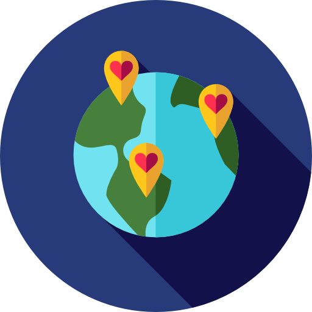
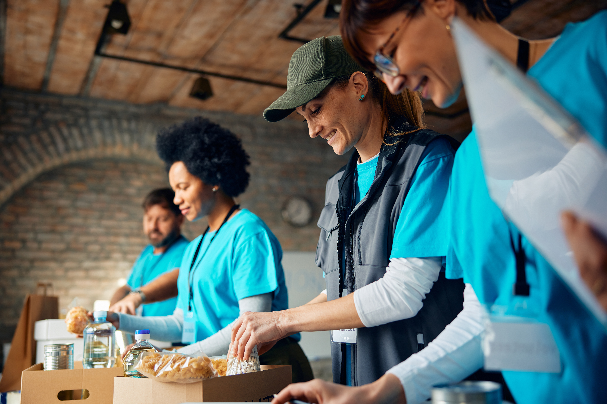
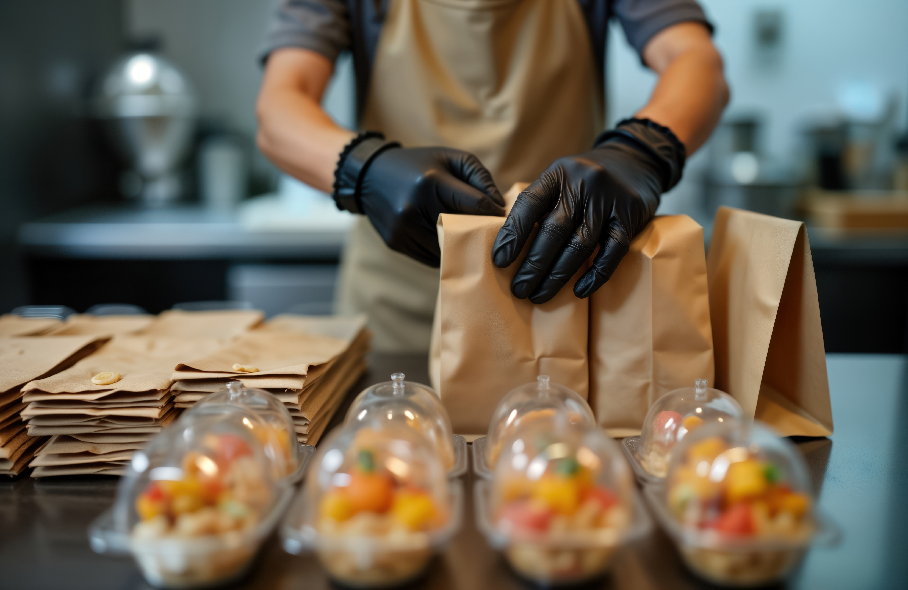
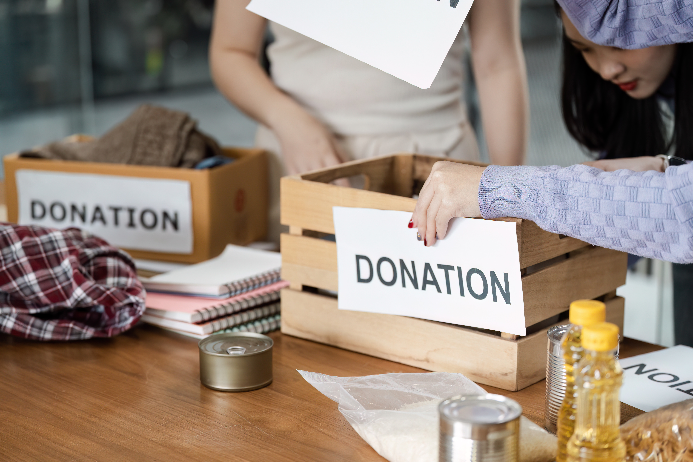
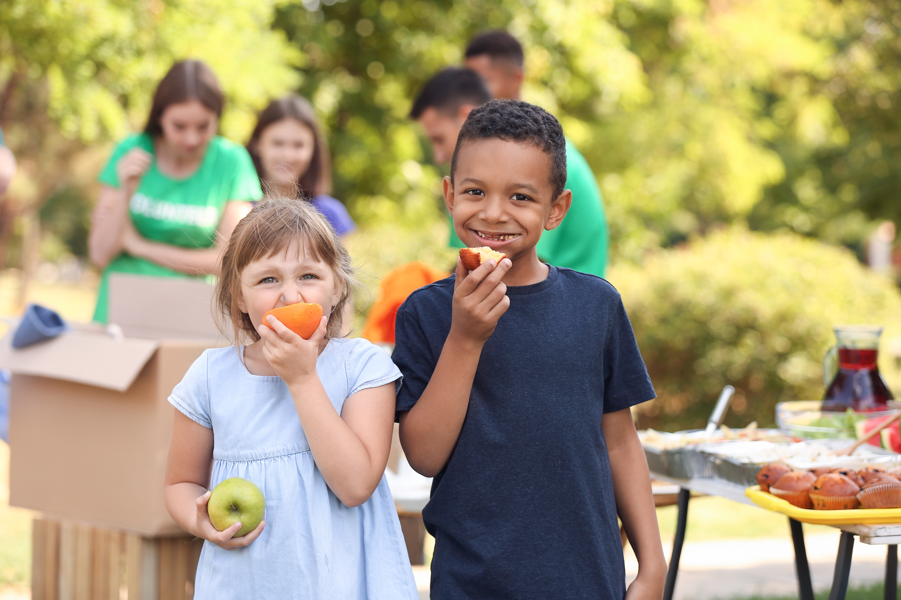

Get Involved
Your time, your donations, your support — it all makes a difference.
Ways to Support
1. Volunteer Your Time
Join our amazing team of volunteers. Help pack food, assist clients, or deliver parcels.
2. Donate Food
Drop off non-perishable items at our collection points across the city. Every item helps.
3. Give Financially
Regular or one-off donations help us keep up with growing demand and support operations.
Start a Fundraiser
Whether you’re a school, workplace or individual — you can host an event and raise awareness.
Get In TouchHow Else Can I Help?

Corporate Partnerships
We work with companies to build lasting impact through sponsorship and donations.
Become a PartnerBecome a Driver
Help us deliver food parcels directly to individuals and families who can’t travel.
Sign UpCommunity Events
Run a bake sale, a donation drive or a fundraiser — and we’ll support you every step.
Start PlanningOur Volunteers in Action
Take a look at some of the amazing moments from our past volunteer efforts.




Contact Us
📍 Leeds Community Centre, Main Street, Leeds LS1
📞 0113 123 4567 (Mon–Fri, 10am–4pm)
✉ info@leedsfoodaid.org.uk